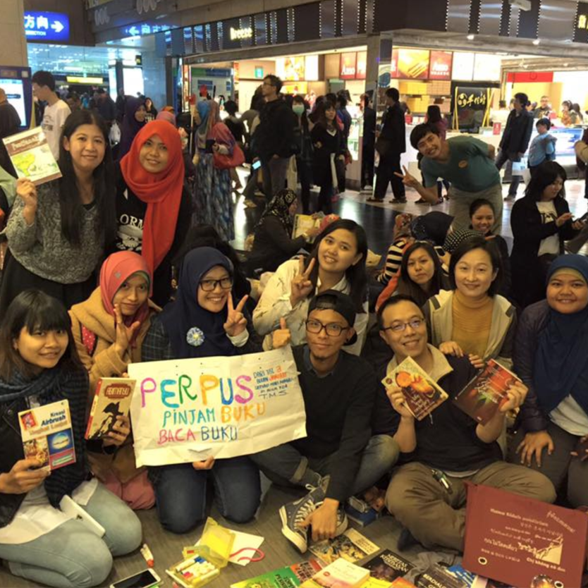

北車大廳F24行動書攤
地址：台北市中正區忠孝西路一段49號
電話：N/A
據點簡介：
「F24 地板圖書館」是在編號 F24 柱子下的書攤，自2016年初開始，每週日下午2點到6點，敞開的行李箱中擺放着許多東南亞書籍，免費提供給移工們借閲。
這間行動圖書館其實是位於台灣新北市的「燦爛時光：東南亞主題書店」的遊擊式分店。書店創辦人張正先前是全台第一份東南亞報刊《四方報》的總編，也製作過東南亞歌唱節目《唱四方》，
創辦移民工文學獎，不斷以行動落實《四方報》核心理念：「讓」弱勢發聲，而不是「為」弱勢發聲。